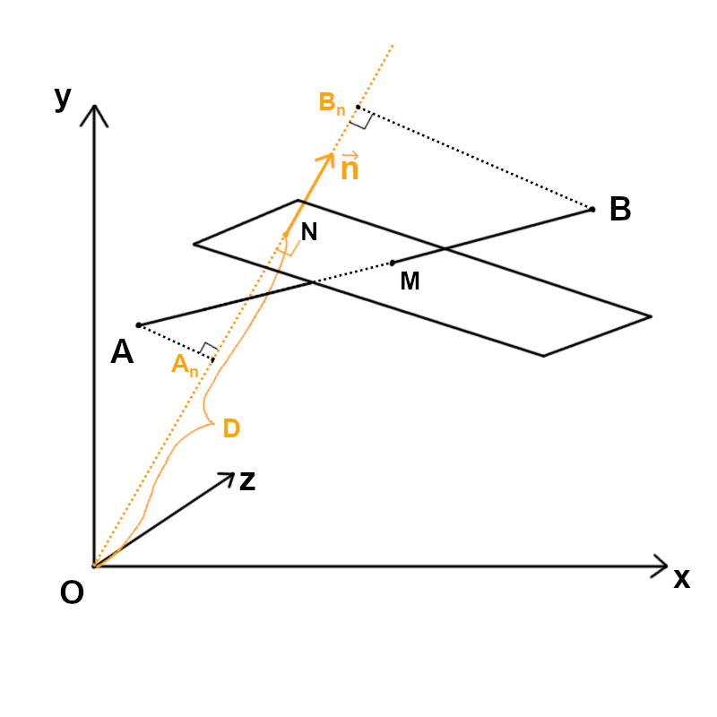
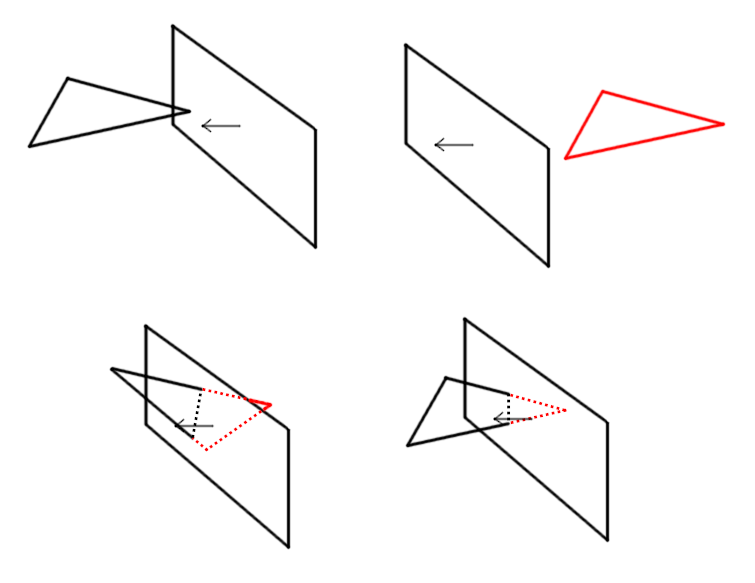
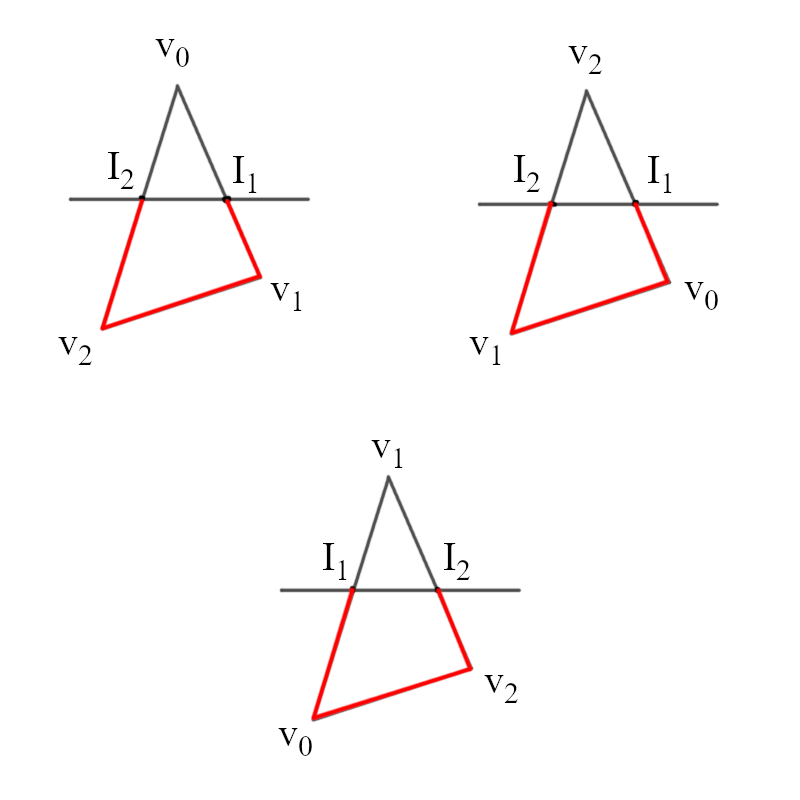
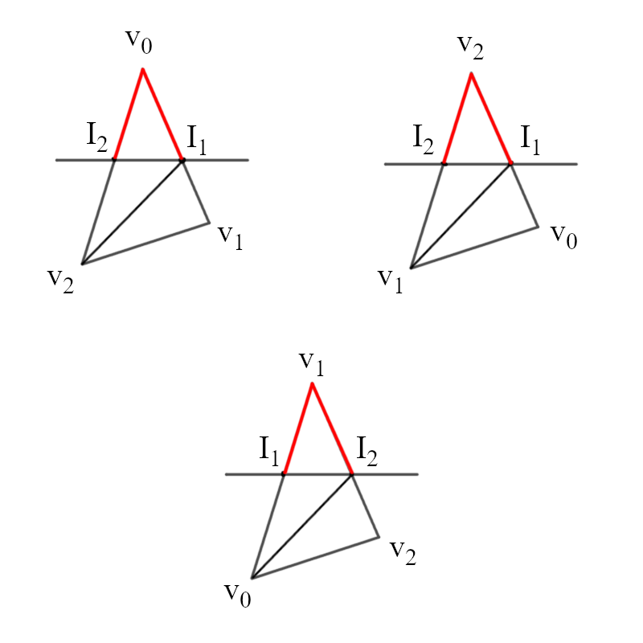

View matrix và Clipping
Ta sẽ về lại với ma trận sau một blog khủng hoảng với toán 4D 🥵 Blog này không nằm kế tiếp blog model (đủ bộ Model View Project matrix) là có lí do cả.Từ đầu tới giờ ta chỉ "đúng một chỗ nhìn", render đúng 1 góc nhìn ở 1 vị trí cố định (0, 0, 0), nếu như ta muốn "xoay chỗ khác" hay "đi chỗ khác" thì sao? Đó chính là công dụng của View matrix, là điều khiển "camera" và hiển thị đúng những gì mà "camera" thấy.
Đầu tiên, ta phải hiểu là View matrix không di chuyển hay xoay camera, mà thật ra là đang di chuyển và xoay cả thế giới quanh camera, camera vẫn luôn ở (0, 0, 0) và luôn nhìn theo trục Z (nếu là hệ tọa độ tay trái). Ví dụ ta muốn camera ở vị trí (0, 2, -5) và euler angles của nó là (30, -50, 40), ta phải di chuyển toàn bộ object (0, -2, 5) và xoay toàn bộ object quanh gốc tọa độ (chứ ko phải quanh tâm của chính nó) (-30, 50, -40) (xoay theo thứ tự \(z \rightarrow y \rightarrow x\), ngược với lúc xoay object).
Theo ví dụ đó, view matrix chỉ là kết quả nhân của 3 rotation matrix và 1 translation matrix, gọi vị trí camera là \(t\) và euler angles của camera là \((\alpha, \beta, \gamma)\), view matrix sẽ có dạng như sau: $$ \begin{pmatrix} 1 & 0 & 0 & 0\\ 0 & cos{(-\alpha)} & sin{(-\alpha)} & 0\\ 0 & -\sin{(-\alpha)} & \cos{(-\alpha)} & 0\\ 0 & 0 & 0 & 1 \end{pmatrix} \begin{pmatrix} cos{(-\beta)} & 0 & -sin{(-\beta)} & 0\\ 0 & 1 & 0 & 0\\ \sin{(-\beta)} & 0 & \cos{(-\beta)} & 0 \\ 0 & 0 & 0 & 1 \end{pmatrix} \begin{pmatrix} cos{(-\gamma)} & sin{(-\gamma)} & 0 & 0\\ -\sin{(-\gamma)} & \cos{(-\gamma)} & 0 & 0\\ 0 & 0 & 1 & 0\\ 0 & 0 & 0 & 1 \end{pmatrix} \begin{pmatrix} 1 & 0 & 0 & -t_{x}\\ 0 & 1 & 0 & -t_{y}\\ 0 & 0 & 1 & -t_{z}\\ 0 & 0 & 0 & 1 \end{pmatrix} $$ $$ = \begin{pmatrix} \cos\beta\cos\gamma & -\cos\beta\sin\gamma & \sin\beta & -(\cos\beta\cos\gamma\,t_x -\cos\beta\sin\gamma\,t_y +\sin\beta\,t_z) \\ \sin\alpha\sin\beta\cos\gamma + \cos\alpha\sin\gamma & -\sin\alpha\sin\beta\sin\gamma + \cos\alpha\cos\gamma & -\sin\alpha\cos\beta & -( (\sin\alpha\sin\beta\cos\gamma + \cos\alpha\sin\gamma)t_x +(-\sin\alpha\sin\beta\sin\gamma + \cos\alpha\cos\gamma)t_y -\sin\alpha\cos\beta\,t_z ) \\ -\cos\alpha\sin\beta\cos\gamma + \sin\alpha\sin\gamma & \cos\alpha\sin\beta\sin\gamma + \sin\alpha\cos\gamma & \cos\alpha\cos\beta & -( (-\cos\alpha\sin\beta\cos\gamma + \sin\alpha\sin\gamma)t_x +(\cos\alpha\sin\beta\sin\gamma + \sin\alpha\cos\gamma)t_y +\cos\alpha\cos\beta\,t_z ) \\ 0 & 0 & 0 & 1 \end{pmatrix} $$
Mình dùng ChatGPT để ra được kết quả trên vì nhân bằng tay chắc tới mai 🥵
Nếu bạn thấy rối vì ở trên mình nói là theo thứ tự \(z \rightarrow y \rightarrow x\) nhưng lúc nhân lại là ngược lại, đó là vì ta đang applied ma trận từ phải sang trái, xem lại code của blog 5, ma trận nằm bên trái vector, và ma trận nào được làm trước sẽ nằm bên phải.
Nếu bạn muốn, bạn có thể xài luôn ma trận bùi nhùi đó vào trong engine 😂, và nó sẽ chạy đúng. Nhưng trong đồ họa 3D thì không ai biểu diễn view matrix với euler angles cả, mà thay vào đó người ta sẽ dùng 3 vector đơn vị đại diện cho trục local của camera, gọi là forward (\(\vec{f}\)), up (\(\vec{u}\)) và right (\(\vec{r}\)). Thật ra bạn có thể chuyển ma trận trên thành ma trận chỉ có forward, up, right nếu bạn đủ kiên nhẫn để làm lượng giác với không gian 3D.
Cách tốt nhất là từ forward, up, right làm lên, ta sẽ xoay 3 vector đó lần lượt theo từng trục xem nó thành gì, bây giờ thì ta lại xoay nó như xoay object (\(x \rightarrow y \rightarrow z\)), vì ta cũng có thể xem camera như một object.
Đầu tiên ta có: $$ \begin{eqnarray} r = (1, 0, 0)\\ u = (0, 1, 0)\\ f = (0, 0, 1) \end{eqnarray} $$ Xoay theo trục \(x\), là nhân cho x rotation matrix: $$ \begin{pmatrix} 1 & 0 & 0 & 0\\ 0 & cos\alpha & sin\alpha & 0\\ 0 & -\sin\alpha & \cos\alpha & 0\\ 0 & 0 & 0 & 1 \end{pmatrix} \begin{pmatrix} 1\\ 0\\ 0\\ 0 \end{pmatrix}= \begin{pmatrix} 1\\ 0\\ 0\\ 0 \end{pmatrix} $$ $$ \begin{pmatrix} 1 & 0 & 0 & 0\\ 0 & cos\alpha & sin\alpha & 0\\ 0 & -\sin\alpha & \cos\alpha & 0\\ 0 & 0 & 0 & 1 \end{pmatrix} \begin{pmatrix} 0\\ 1\\ 0\\ 0 \end{pmatrix}= \begin{pmatrix} 0\\ \cos{\alpha}\\ -\sin{\alpha}\\ 0 \end{pmatrix} $$ $$ \begin{pmatrix} 1 & 0 & 0 & 0\\ 0 & cos\alpha & \sin\alpha & 0\\ 0 & -\sin\alpha & \cos\alpha & 0\\ 0 & 0 & 0 & 1 \end{pmatrix} \begin{pmatrix} 0\\ 0\\ 1\\ 0 \end{pmatrix}= \begin{pmatrix} 0\\ \sin\alpha\\ \cos\alpha\\ 0 \end{pmatrix} $$ Xoay theo trục \(y\): $$ \begin{pmatrix} cos{\beta} & 0 & -\sin{\beta} & 0\\ 0 & 1 & 0 & 0\\ \sin{\beta} & 0 & \cos{\beta} & 0 \\ 0 & 0 & 0 & 1 \end{pmatrix} \begin{pmatrix} 1\\ 0\\ 0\\ 0 \end{pmatrix}= \begin{pmatrix} \cos{\beta}\\ 0\\ \sin{\beta}\\ 0\\ \end{pmatrix} $$ $$ \begin{pmatrix} cos{\beta} & 0 & -\sin{\beta} & 0\\ 0 & 1 & 0 & 0\\ \sin{\beta} & 0 & \cos{\beta} & 0 \\ 0 & 0 & 0 & 1 \end{pmatrix} \begin{pmatrix} 0\\ \cos{\alpha}\\ -\sin{\alpha}\\ 0 \end{pmatrix}= \begin{pmatrix} \sin\alpha\sin\beta\\ \cos\alpha\\ -sin\alpha\cos\beta\\ 0 \end{pmatrix} $$ $$ \begin{pmatrix} cos{\beta} & 0 & -\sin{\beta} & 0\\ 0 & 1 & 0 & 0\\ \sin{\beta} & 0 & \cos{\beta} & 0 \\ 0 & 0 & 0 & 1 \end{pmatrix} \begin{pmatrix} 0\\ \sin\alpha\\ \cos\alpha\\ 0 \end{pmatrix}= \begin{pmatrix} -\cos\alpha\sin\beta\\ \sin\alpha\\ \cos\alpha\cos\beta\\ 0 \end{pmatrix} $$ Xoay theo trục \(z\): $$ \begin{pmatrix} cos{\gamma} & \sin{\gamma} & 0 & 0\\ -\sin{\gamma} & \cos{\gamma} & 0 & 0\\ 0 & 0 & 1 & 0\\ 0 & 0 & 0 & 1 \end{pmatrix} \begin{pmatrix} \cos{\beta}\\ 0\\ \sin{\beta}\\ 0\\ \end{pmatrix}= \begin{pmatrix} \cos{\beta}\cos{\gamma}\\ -\cos{\beta}\sin{\gamma}\\ \sin{\beta}\\ 0 \end{pmatrix} $$ $$ \begin{pmatrix} cos{\gamma} & \sin{\gamma} & 0 & 0\\ -\sin{\gamma} & \cos{\gamma} & 0 & 0\\ 0 & 0 & 1 & 0\\ 0 & 0 & 0 & 1 \end{pmatrix} \begin{pmatrix} \sin{\beta}\sin{\alpha}\\ \cos{\alpha}\\ -\sin{\alpha}\cos{\beta}\\ 0 \end{pmatrix}= \begin{pmatrix} \sin{\alpha}\sin{\beta}\cos{\gamma} + \cos{\alpha}\sin{\gamma}\\ -\sin{\alpha}\sin{\beta}\sin{\gamma} + \cos{\alpha}\cos{\gamma}\\ -\sin{\alpha}\cos{\beta}\\ 0 \end{pmatrix} $$ $$ \begin{pmatrix} cos{\gamma} & \sin{\gamma} & 0 & 0\\ -\sin{\gamma} & \cos{\gamma} & 0 & 0\\ 0 & 0 & 1 & 0\\ 0 & 0 & 0 & 1 \end{pmatrix} \begin{pmatrix} -\cos\alpha\sin{\beta}\\ \sin\alpha\\ \cos\alpha\cos\beta\\ 0 \end{pmatrix}= \begin{pmatrix} -\cos\alpha\sin\beta\cos\gamma + \sin\alpha\sin\gamma\\ \cos\alpha\sin\beta\sin\gamma + \sin\alpha\cos\gamma\\ \cos\alpha\cos\beta\\ 0 \end{pmatrix} $$ Như vậy: $$ r' = \begin{pmatrix} \cos{\beta}\cos{\gamma}\\ -\cos{\beta}\sin{\gamma}\\ \sin{\beta} \end{pmatrix} $$ $$ u' = \begin{pmatrix} \sin{\alpha}\sin{\beta}\cos{\gamma} + \cos{\alpha}\sin{\gamma}\\ -\sin{\alpha}\sin{\beta}\sin{\gamma} + \cos{\alpha}\cos{\gamma}\\ -\sin{\alpha}\cos{\beta} \end{pmatrix} $$ $$ f' = \begin{pmatrix} -\cos\alpha\sin\beta\cos\gamma + \sin\alpha\sin\gamma\\ \cos\alpha\sin\beta\sin\gamma + \sin\alpha\cos\gamma\\ \cos\alpha\cos\beta \end{pmatrix} $$ Gán vào ma trận bùi nhùi ở trên, thế là ta có view matrix mà ta muốn: $$ \begin{pmatrix} r'_x & r'_y & r'_z & -r'_x.t_x -r'_y.t_x-r'_z.t_z\\ u'_x & u'_y & u'_z & -u'_x.t_x -u'_y.t_x-u'_z.t_z \\ f'_x & f'_y & f'_z & -f'_x.t_x -f'_y.t_x-f'_z.t_z \\ 0 & 0 & 0 & 1 \end{pmatrix}= \begin{pmatrix} r'_x & r'_y & r'_z & -\langle r, t \rangle\\ u'_x & u'_y & u'_z & -\langle u, t \rangle\\ f'_x & f'_y & f'_z & -\langle f, t \rangle\\ 0 & 0 & 0 & 1 \end{pmatrix} $$ Nếu bạn tìm google về View matrix, thường thì người ta sẽ nhắc tới LookAt matrix (đơn giản chỉ là ma trận kết hợp xoay và di chuyển, ma trận này cũng theo forward, up, right). Nghịch đảo ma trận LookAt sẽ ra View matrix, thật ra về bản chất cũng không khác những gì mình làm, nghịch đảo của rotation matrix sẽ ra lại rotation matrix đó nhưng đối dấu góc, nghịch đảo translation matrix cũng ra lại ma trận đó nhưng đổi dấu \(t\). Nếu bạn hiểu bản chất của nghịch đảo ma trận thì hiểu theo cách đó cũng được 😳 Ngoài ra khi tìm google bạn sẽ thấy nhiều phiên bản khác nhau của View Matrix, đó là vì nó khác nhau về handedness của hệ tọa độ (trái hay phải) và vector ở dạng ma trận là column hay row, với engine mình đang làm thì nó là hệ tọa độ tay trái (left-handed coordinate) và vector là column vector nếu bạn không nhớ.
Nhìn vào view matrix, bạn cũng phần nào đoán được nó làm gì, khối 3x3 ở góc trái khi nhân với \(v\) nó sẽ ra tích có hướng của \(v\) với \(r, u, f\), đồng nghĩa "hình chiếu của \(v\) trên 3 trục mới \(r, u, f\)". Và 3 cái tích vô hướng với \(t\) là "cộng vào \(v\) một vector \(t'\) đã được biến đổi theo trục mới".
Có được View matrix rồi, ta bắt tay vào code thôi, ta sẽ làm luôn một hệ thống di chuyển camera như FPS, dùng chuột để nhìn qua lại, WASD để di chuyển, ngoài ra Space để bay lên và Shift để bay xuống. Đầu tiên ta hãy tạo một hàm tạo View matrix từ forward, up, right và t:
class Mat4x4 {
...
static View(r, u, f, t) {
let matrix = new Mat4x4();
matrix.m[0][0] = r.x;
matrix.m[0][1] = r.y;
matrix.m[0][2] = r.z;
matrix.m[1][0] = u.x;
matrix.m[1][1] = u.y;
matrix.m[1][2] = u.z;
matrix.m[2][0] = f.x;
matrix.m[2][1] = f.y;
matrix.m[2][2] = f.z;
matrix.m[0][3] = -Vector3.dot(r,t);
matrix.m[1][3] = -Vector3.dot(u,t);
matrix.m[2][3] = -Vector3.dot(f,t);
matrix.m[3][3] = 1;
return matrix;
}
...
}class Camera {
constructor(pos, euler, speed, sensitivity) {
this.pos = pos;
this.rotation = Quaternion.buildQuaternionEuler(euler);
this.speed = speed;
this.sensitivity = sensitivity;
}
updateRotation(mouseMovementX, mouseMovementY) {
let q = Quaternion.buildQuaternionAxisAngle(Vector3.up, -mouseMovementX * this.sensitivity);
let right = this.rotation.rotateVector(Vector3.right);
q = Quaternion.multiply(q, Quaternion.buildQuaternionAxisAngle(right, -mouseMovementY * this.sensitivity));
this.rotation = Quaternion.multiply(q, this.rotation);
}
updateMovement(dt, keyStates) {
let forward = this.rotation.rotateVector(Vector3.forward);
let right = this.rotation.rotateVector(Vector3.right);
if (keyStates['w']) {
this.pos = Vector3.add(this.pos, Vector3.mul(forward, dt * this.speed));
}
if (keyStates['s']) {
this.pos = Vector3.sub(this.pos, Vector3.mul(forward, dt * this.speed));
}
if (keyStates['a']) {
this.pos = Vector3.sub(this.pos, Vector3.mul(right, dt * this.speed));
}
if (keyStates['d']) {
this.pos = Vector3.add(this.pos, Vector3.mul(right, dt * this.speed));
}
if (keyStates['Shift']) {
this.pos = Vector3.add(this.pos, Vector3.mul(Vector3.down, dt * this.speed));
}
if (keyStates[' ']) {
this.pos = Vector3.add(this.pos, Vector3.mul(Vector3.up, dt * this.speed));
}
}
getViewMatrix() {
let forward = this.rotation.rotateVector(Vector3.forward);
let right = this.rotation.rotateVector(Vector3.right);
let up = this.rotation.rotateVector(Vector3.up);
return Mat4x4.View(right, up, forward, this.pos);
}
}let camera = new Camera(Vector3.zero, Vector3.zero, 2, 0.2);function update(time = performance.now()) {
...
const viewMat = camera.getViewMatrix();
...
for (let tri of allTris) {
if (Vector3.dot(tri.getNormal(), Vector3.sub(tri.getCenter(), camera.pos)) < 0) {
let vertices = tri.vertices;
for (let i = 0; i < vertices.length; i++) {
vertices[i].mulMat4x4(viewMat);
vertices[i].mulMat4x4(projectionMatrix);
...
}
...
}
}
}let keyStates = [];
...
window.addEventListener('keydown', (e) => {
keyStates[e.key] = true;
});
window.addEventListener('keyup', (e) => {
keyStates[e.key] = false;
});function update(time = performance.now()) {
...
camera.updateMovement(dt, keyStates);
const viewMat = camera.getViewMatrix();
...
}canvas.addEventListener("click", async () => {
await canvas.requestPointerLock({
unadjustedMovement: true,
});
});
canvas.addEventListener("mousemove", (e) => {
if (document.pointerLockElement === canvas) {
camera.updateRotation(e.movementX, e.movementY);
}
});- Di chuyển sao cho 2 cube align với nhau sẽ thấy được cube đằng sau mặc dù bị cube đằng trước che
- Khi bạn đi xuyên qua cube và đi thêm một đoạn nữa, bạn lại thấy được 2 cube nhưng lúc này bạn càng đi nó càng xa (thật ra bạn đang thấy được đằng sau bạn)
Vấn đề đầu tiên thật ra cũng đơn giản, đó là vì trước giờ ta chỉ vẽ viền của các tam giác chứ chưa hề tô màu cho nó, nên cái nào đứng trước cũng như vậy. Ta sẽ tô một màu xám xám cho các tam giác bằng hàm ctx.fill(), nhưng vẫn vẽ viền để thấy được wireframe của cube:
for (let tri of allTris) {
if (Vector3.dot(tri.getNormal(), Vector3.sub(tri.getCenter(), camera.pos)) < 0) {
...
ctx.fillStyle = "#ccc";
ctx.fill();
ctx.strokeStyle = "#000";
ctx.stroke();
}
}let allTris = [];
allTris.push(...cube1.getTransformedTriangles());
allTris.push(...cube2.getTransformedTriangles());
allTris.sort((a, b) => {
let distA = Vector3.sub(a.getCenter(), camera.pos).magnitude();
let distB = Vector3.sub(b.getCenter(), camera.pos).magnitude();
return distB - distA;
});Việc cắt một tam giác bằng một mặt phẳng nghe có vẻ phức tạp, nhưng ta có thể phân tích nó từ từ. Đầu tiên, ta có thể tưởng tượng được là một tam giác và một mặt phẳng giao nhau sẽ thành một đoạn thẳng, mà một đoạn thẳng thì được định nghĩa bằng 2 điểm, 2 điểm đó chính là giao điểm của 2 cạnh tam giác với mặt phẳng đó, nghĩa là ta chỉ cần giải quyết bài toán tìm giao điểm giữa một đoạn thẳng với một mặt phẳng.
Ở cấp 3 bạn đã học phương trình mặt phẳng là \(Ax+By+Cz+D=0\), trong đó vector pháp tuyến \(\vec{n}=(A,B,C)\). Bạn để ý là \(Ax+By+Cz\) chính là tích vô hướng giữa \(\vec{n}\) và một điểm \(P=(x,y,z)\). Ta có thể viết phương trình trên thành \(\vec{n}.P=D\) (\(D\) là hằng số bất kỳ nên đổi dấu hay không cũng vậy), bạn có thể hiểu phương trình này là "tập hợp các điểm \(P\) có độ dài hình chiếu lên vector pháp tuyến \(\vec{n}\) là \(D\) sẽ tạo ra một mặt phẳng". Từ kỹ thuật "chiếu lên pháp tuyến" này, ta cũng có thể giải quyết được bài toán tìm giao điểm giữa đoạn thẳng và mặt phẳng. Gọi 2 điểm ở 2 đầu đoạn thẳng là \(A\) và \(B\). Gọi hình chiếu của điểm \(A\) và \(B\) lên \(\vec{n}\) là \(A_n\) và \(B_n\), đoạn thẳng \(AB\) sẽ giao với mặt phẳng khi \(|\vec{A_n}| < D < |\vec{B_n}|\) hoặc \(|\vec{A_n}| > D > |\vec{B_n}|\). Nhìn hình dưới đây để thấy rõ hơn, bạn nên nhớ là \(\vec{n}\) có thể được vẽ ở đâu cũng được chứ không nhất thiết phải ở đúng trục đi qua gốc tọa độ.

Sau khi biết cách cắt tam giác bằng mặt phẳng rồi, ta để ý là sau khi cắt một tam giác bằng một mặt phẳng, nó sẽ ra một tam giác nhỏ hơn và một tứ giác (quad). Vì engine ta chỉ hiểu tam giác nên ta phải cắt tứ giác đó thành 2 tam giác nữa, ta chỉ cần lấy 1 trong 2 đường chéo của tứ giác đó để cắt, không quan trọng đường chéo nào, nhưng cái quan trọng là sau khi cắt ta phải ghi thứ tự đỉnh theo chiều kim đồng hồ như đã thống nhất ở blog 1.
Quay trở lại với engine chúng ta, ta muốn loại bỏ những phần đằng sau near plane, chỉ hiển thị phần đằng trước. Ta sẽ xem vector pháp tuyến của một mặt phẳng là "hướng nhìn" của nó, những điểm mặt phẳng đó đang "nhìn" sẽ nằm "đằng trước" mặt phẳng, còn ngược lại thì nằm "đằng sau" mặt phẳng. Một điểm \(P\) sẽ nằm đằng trước mặt phẳng nếu hình chiếu của \(P\) lên \( \vec{n} \) có độ dài lớn hơn \(D\) (bạn nên nhớ rằng độ dài hình chiếu đó và \(D\) đều có dấu). Đồng nghĩa với việc điểm \(P\) nằm đằng trước mặt phẳng nếu \( \vec{P} \cdot \vec{n} \geq D \) (có dấu bằng hay không tùy bạn).
Nhìn tổng thể, đối với mỗi tam giác, ta sẽ có 4 trường hợp:

- Cả 3 điểm đều nằm đằng trước near plane
- Cả 3 điểm đều nằm đằng sau near plane
- Có 1 điểm nằm đằng trước và 2 điểm nằm đằng sau near plane, ta phải cắt tam giác, lúc này ta chỉ cần hiển thị phần tam giác nhỏ
- Có 2 điểm nằm đằng trước và 1 điểm nằm đằng sau near plane, ta phải cắt tam giác, lúc này phần quad sẽ nhìn thấy được, ta phải cắt quad đó ra thành 2 tam giác để hiển thị

Javidx9 không hề nói tới vụ này và code của ổng cũng không có, mình đang nghi ngờ ổng đã code sai, video ổng vẫn chạy đúng có thể vì chỉ gặp đúng 2 trường hợp đầu trong lúc clip tam giác, mình chưa clone code ổng về chạy thử nên chưa chắc chắn được.
Đối với trường hợp 4 cũng tương tự thôi, nhìn hình, ta dựng 2 tam giác mới theo thứ tự [frontPoints[0], frontPoints[1], I1] và [frontPoints[1], I2, I1]. Với trường hợp behindPoints = [v1] thì swap 2 frontPoints.

Bây giờ ta sẽ bắt đầu code Clipping vào engine của chúng ta. Đầu tiên mình định nghĩa class Plane, constructor truyền vào vector pháp tuyến và một điểm bất kỳ trên plane (cũng là cách ta xác định một mặt phẳng trong toán học), dùng 2 cái đó ta có thể tính được D. Thêm hàm isPointInFrontOfPlane để check xem một điểm có nằm trước plane hay không, và hàm intersectWithLine để tìm giao điểm của một đoạn thẳng AB với plane, với cơ sở toán học như trên đã nói:
class Plane {
constructor(normal, P) {
this.normal = normal.normalize();
this.P = P;
this.D = Vector3.dot(this.normal, this.P);
}
isPointInFrontOfPlane(p) {
return Vector3.dot(p, this.normal) >= this.D;
}
intersectWithLine(A, B) {
let An = Vector3.dot(A, this.normal);
let Bn = Vector3.dot(B, this.normal);
let vectorAB = Vector3.sub(B, A);
let vectorAM = Vector3.mul(vectorAB, (this.D - An) / (Bn - An));
return Vector3.add(A, vectorAM);
}
}clipAgainstPlane(plane) {
let outTris = [];
let frontPoints = [];
let behindPoints = [];
for (let i = 0; i < this.vertices.length; i++) { //for qua từng đỉnh check xem đỉnh nằm nằm trước plane, add vào mảng phù hợp
if (plane.isPointInFrontOfPlane(this.vertices[i])) {
frontPoints.push(i);
} else {
behindPoints.push(i);
}
}
if (frontPoints.length == 3) { // trường hợp 1
outTris.push(this.clone());
} else if (frontPoints.length == 1 && behindPoints.length == 2) { // trường hợp 3
let outTri = new Triangle();
if (behindPoints[0] == 0 && behindPoints[1] == 2) { //swap 2 đỉnh khi gặp trường hợp thứ tự đứt
behindPoints[0] = 2;
behindPoints[1] = 0;
}
let f = this.vertices[frontPoints[0]];
let b0 = this.vertices[behindPoints[0]];
let b1 = this.vertices[behindPoints[1]];
outTri.vertices[0] = f;
outTri.vertices[1] = plane.intersectWithLine(f, b0);
outTri.vertices[2] = plane.intersectWithLine(f, b1);
outTris.push(outTri);
} else if (frontPoints.length == 2 && behindPoints.length == 1) { // trường hợp 4
let outTri1 = new Triangle(), outTri2 = new Triangle();
if (frontPoints[0] == 0 && frontPoints[1] == 2) { //swap 2 đỉnh khi gặp trường hợp thứ tự đứt
frontPoints[0] = 2;
frontPoints[1] = 0;
}
let f0 = this.vertices[frontPoints[0]];
let f1 = this.vertices[frontPoints[1]];
let b = this.vertices[behindPoints[0]];
let intersection1 = plane.intersectWithLine(f0, b);
let intersection2 = plane.intersectWithLine(f1, b);
outTri1.vertices[0] = f0;
outTri1.vertices[1] = f1;
outTri1.vertices[2] = intersection1;
outTris.push(outTri1);
outTri2.vertices[0] = f1.clone(); // phải clone vì 2 tam giác xài chung reference tới f1 sẽ có hệ lụy về sau
outTri2.vertices[1] = intersection2;
outTri2.vertices[2] = intersection1.clone(); // phải clone vì lí do như trên
outTris.push(outTri2);
}
// trường hợp 2
return outTris;
}
lấy hết tam giác
sort tam giác
foreach tam giác:
if tam giác nhìn thấy được:
áp dụng view matrix
áp dụng projection matrix
chia w
áp dụng kích thước canvas
vẽ tam giác
lấy hết tam giác
foreach tam giác:
if tam giác nhìn thấy được:
áp dụng view matrix
cắt tam giác bằng near plane
thêm các tam giác mới vào list tam giác nhìn thấy được
sort tam giác nhìn thấy được
foreach tam giác nhìn thấy được:
áp dụng projection matrix
chia w
áp dụng kích thước canvas
vẽ tam giác
let objectTris = []; //đổi tên allTris thành objectTris vì nó đúng hơn
objectTris.push(...cube1.getTransformedTriangles());
objectTris.push(...cube2.getTransformedTriangles());
let visibleTris = [];
for (let tri of objectTris) {
if (Vector3.dot(tri.getNormal(), Vector3.sub(tri.getCenter(), camera.pos)) < 0) { // backface culling ngay từ đây để đỡ tính toán dư thừa
tri.mulMat4x4(viewMat);
visibleTris.push(...tri.clipAgainstPlane(nearPlane)); // cắt bằng near plane
}
}
visibleTris.sort((a, b) => { // sort tam giác theo khoảng cách tới camera, vì lúc này đã áp dụng view matrix rồi nên không cần phải trừ camera.pos nữa
let distA = a.getCenter().magnitude();
let distB = b.getCenter().magnitude();
return distB - distA;
});
for (let tri of visibleTris) {
tri.mulMat4x4(projectionMatrix);
tri.perspectiveDivide(); // viết thêm hàm chia cho w cho cả 3 đỉnh của tam giác, tách biệt khỏi phần áp dụng kích thước canvas (có lí do)
let vertices = tri.vertices;
for (let i = 0; i < vertices.length; i++) {
vertices[i] = new Vector3(
vertices[i].x * canvas.width + canvas.width / 2,
-vertices[i].y * canvas.height + canvas.height / 2,
1);
}
ctx.beginPath();
...
}perspectiveDivide() {
for (let i = 0; i < this.vertices.length; i++) {
this.vertices[i] = Vector3.div(this.vertices[i], this.vertices[i].w);
}
}let nearPlane = new Plane(Vector3.forward, new Vector3(0, 0, znear));Nhưng clipping không dừng ở đây, thật ra ta cần phải clip các tam giác với 4 cạnh màn hình nữa, để tránh các tam giác quá gần màn hình trở nên quá bự, tốn nhiều thời gian để vẽ những phần bên ngoài canvas. Mà do ta dùng ctx.fill() của javascript nên tam giác bự cỡ nào thì ta cũng không thấy fps giảm, nhưng ở blog sau sẽ khác 😳 Ở blog này ta phải làm được việc clip 4 cạnh màn hình thì ta mới dễ thở ở blog sau được 🥵
Về cài đặt thì cách đơn giản nhất là clip hết tam giác với 1 cạnh, lưu hết các tam giác cũ và mới vào 1 mảng, rồi dùng tiếp mảng đó để clip tiếp với cạnh tiếp theo, cho đến khi hết cạnh. Cách này sẽ sinh ra các mảng rác, cách tốt hơn là sử dụng một queue, với mỗi plane, pop từng tam giác một ra để clip với plane đó xong add các tam giác kết quả vào cuối queue, sau khi xong 1 plane thì queue đó sẽ chỉ bao gồm các tam giác kết quả, và xài tiếp queue đó cho plane tiếp theo. Nhưng mà code thêm CTDL queue vào trong engine thì sẽ làm code càng dài thêm, nên mình sẽ sử dụng cách đầu 😅
Định nghĩa 4 plane đại diện cho 4 cạnh màn hình:
let edgePlanes = [
new Plane(Vector3.down, new Vector3(0, 0.5, 0)),
new Plane(Vector3.up, new Vector3(0, -0.5, 0)),
new Plane(Vector3.right, new Vector3(-0.5, 0, 0)),
new Plane(Vector3.left, new Vector3(0.5, 0, 0))
];for (let tri of visibleTris) {
tri.mulMat4x4(projectionMatrix);
tri.perspectiveDivide(); //đây là lí do tại sao mình phải tạo thêm hàm này cho việc chia w
}
let clippedTris = visibleTris;
for (let plane of edgePlanes) {
let newTris = [];
for (let tri of clippedTris) {
newTris.push(...tri.clipAgainstPlane(plane));
}
clippedTris = newTris;
}
for (let tri of clippedTris) {
let vertices = tri.vertices;
for (let i = 0; i < vertices.length; i++) {
vertices[i] = new Vector3(
vertices[i].x * canvas.width + canvas.width / 2,
-vertices[i].y * canvas.height + canvas.height / 2,
1);
}
...
}Nếu bạn không biết, thì các thư viện đồ họa như OpenGL, Vulkan,... đều thực hiện việc clipping này ngầm, nếu bạn từng code qua với chúng thì bạn chỉ cần nhân model view projection matrix, xong đưa cho nó các tam giác và vertex buffer, nó sẽ vẽ ra được một cách bình thường và hiệu quả.
Recap lại những gì mà engine ta làm mỗi frame, gọi chung là render pipeline của chúng ta:
- Áp dụng các phép biến đổi cho các object và camera
- Áp dụng model matrix
- Backface culling
- Áp dụng view matrix (chuyển về view space)
- Clip với near plane
- Sort tam giác theo khoảng cách tới camera
- Áp dụng projection matrix (chuyển về clip space)
- Perspective divide
- Clip với 4 cạnh màn hình
- Scale lên cho khớp với kích thước canvas (chuyển về screen space) và vẽ